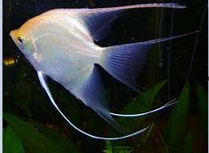

Why are they called Angel Fish
?

It is believed that angel fish got their name because of their shape - their fins appearing like angel wings and when turned head-down, have a silhouette of an angel.
Additionally, some of the species have shimmering scales that reflect the light beautifully when observed on a dive
Does that sound ineteresting to you?
Some Interesting facts
- Freshwater Angelfish Are Members of the Cichlid Family Angelfish are freshwater members of the cichlid family, and they originate from South America. This group includes other popular fish, such as Oscars, Jack Dempseys, parrotfish, and discus.
- Angelfish Are Omnivores
Angelfish will eat live foods and plants, so these omnivores need to be fed the right foods to help them reach optimum size and remain healthy.
- It's usually best to offer a daily feeding of flakes or a pelleted diet formulated for angels.
- Supplement the fish with live feedings of freshly hatched brine shrimp, bloodworms, and daphnia grown from your cultures to avoid contaminated sources.
- Angelfish Can Grow to Nearly 10 Inches On average, well-cared for angelfish will reach about 6 inches at adulthood, which is about a year and a half old. If they're housed in very large tanks and are not overcrowded, they can reach nearly 10 inches, although this would be quite rare in captivity.
- They Are Best Kept With Their Own Kind - they can be aggressive These fish are often thought of as community fish, meaning they can live with a variety of other tropical species.
Knowledge Test
Note:
- Every question has a answer when the mouse is hovered on Check answer
- Please clear the previous value or refresh the page,if you want to play the quiz again